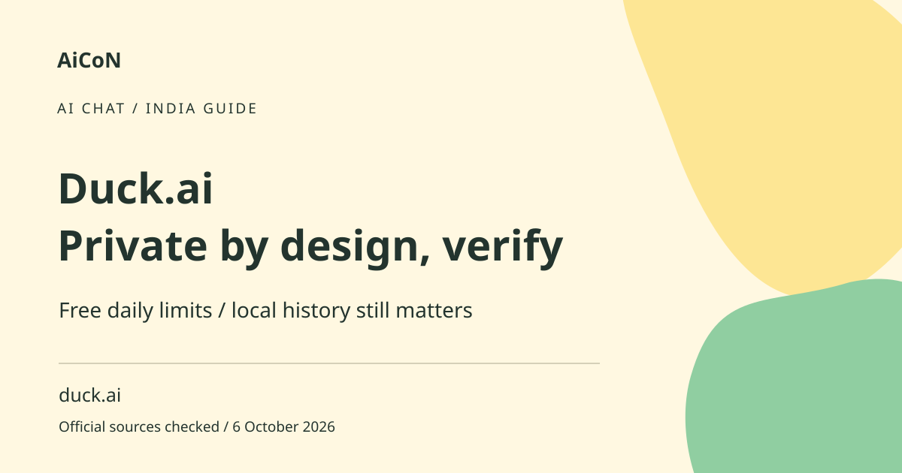

Duck.ai: free chat, privacy claims and daily limits
Duck.ai provides access to AI chats through DuckDuckGo. It has a free daily usage limit and vendor-stated privacy protections. Local chat history and anything you choose to share still deserve care.

What is Duck.ai?
It is an interface for several third-party AI models. Different models can produce different answers to the same question. The current help pages list free and subscriber models, but availability changes. Use the model selector and current help rather than assuming a model named in an older post remains available.
How to use it, step by step
- Reach Duck.ai through the official DuckDuckGo route. Confirm the domain before entering a question or uploading anything.
- Choose an available model and start with a low-risk question. Do not put secrets or sensitive identity information into a test prompt.
- Ask for a specific explanation or task. Make clear what context the model should use.
- For files or images, check the supported upload control and remove unrelated personal information first.
- Read the answer critically and verify important facts through original sources. Model access does not guarantee current or accurate knowledge.
- Review Recent Chats and what is being saved on your device. Delete conversations you no longer need.
- Watch daily limits. When the allowance is reached, follow the app's reset or subscription options rather than looking for unofficial bypasses.
- If submitting feedback or sharing a chat, inspect exactly what will be sent. It is a separate disclosure from ordinary private use.
Free limits and paid options
The official guide says Duck.ai is free with a daily usage limit. Subscriber plans have higher limits and additional models, with daily and weekly limits. The help says daily limits reset at midnight UTC and weekly limits on Sunday at midnight UTC. Do not assume midnight India time. No universal fixed free message count or India subscription price is established here.
What DuckDuckGo says about privacy
The official overview describes private conversations anonymised by DuckDuckGo and says prompts are not stored or used for training in its normal experience. These are company statements, not an independent audit. Privacy protections do not make a model's answer reliable, and they do not erase private information you voluntarily include in text, files or screenshots.
Local history is different from remote storage
Recent Chats stores conversations locally on the device, according to the help page. It describes deleting chats with the Fire Button and pinning up to five chats so they are not removed by that action within Duck.ai. Check pinned content as well as ordinary history. A shared or unlocked device can expose local conversations even when the service does not keep ordinary cloud history.
Files, feedback and sensitive information
A file can include hidden metadata, names or account details. A screenshot can reveal notifications or one-time codes. Share only what is necessary and use the current privacy terms for uploads and feedback. Do not assume voluntarily submitting a conversation for feedback has identical handling to an ordinary chat. Never paste passwords or recovery codes into any model prompt.
Useful India and Kerala workflows
Use it to simplify a public explanation, brainstorm a draft or compare ways to phrase a sentence. For government schemes, banking, medical decisions or exam requirements, verify the relevant official page yourself. Check Malayalam output with a fluent reader when accuracy matters. A natural response may still contain a wrong date or invented reference.
Frequently asked questions
Is Free unlimited?
No. The official guide states a daily usage limit.
Does the Fire Button delete pinned chats?
The overview says pinned chats are protected from that action within Duck.ai. Review them separately.
Are privacy claims independently audited here?
No. They are attributed to DuckDuckGo.
Can I rely on an AI answer about a bank rule?
Verify the current official rule before acting.
Official sources
Checked 6 October 2026. Expanded from an AiCoN short post delivered 5 October 2026. Portal screens and rules can change.